Rafa Monteiro, huyền thoại áo số 7 vừa treo giày, mất vợ giữa Sài Gòn. Kẻ đứng sau là một ông trùm kênh phủi lậu, và điều kiện của hắn chỉ có một: lập một đội, vô địch đủ bảy giải phủi của hắn. Không tiền, không quen ai, Rafa bắt đầu từ chính con hẻm đầu tiên.
Rafa đi cùng hai người đầu tiên trong hẻm. Mỗi bộ ba nghiêng về một lối đá: chuyền nhiều, tranh chấp khoẻ hay rê dắt nhanh. Chỗ còn trống trên sân do cầu thủ vãng lai đá giùm.
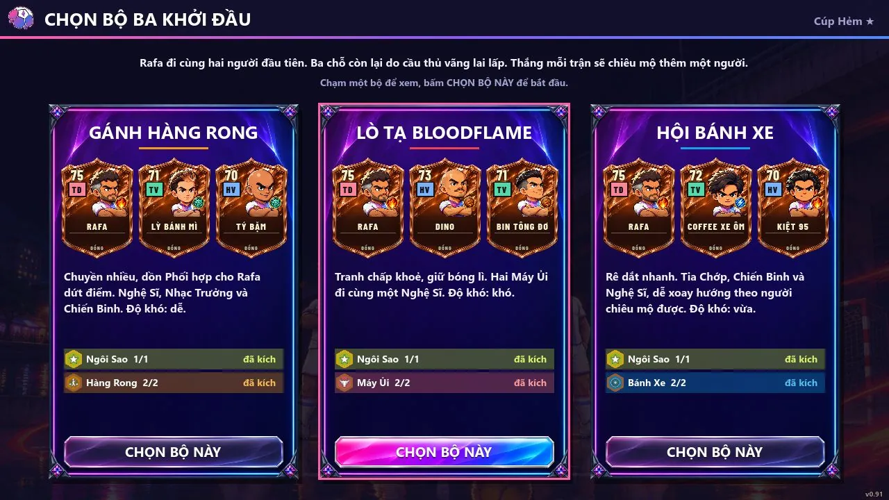
Mỗi cầu thủ thuộc một hệ nghề. Đủ người cùng hệ trên sân thì cả hệ được cộng chỉ số, chẳng hạn người Lò Tạ tranh chấp khoẻ hơn và cả đội cản phá tốt hơn. Trước trận chọn lối đá: cân bằng, đánh biên hay trung lộ.
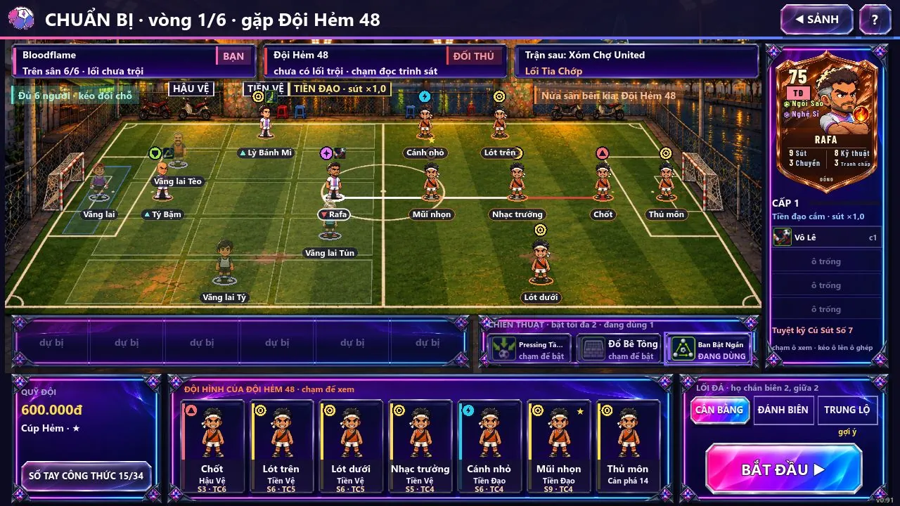
Trận đấu tự chạy. Nộ của ai đầy thì thẻ người đó hiện BẤM ĐỂ TUNG TUYỆT KỸ: chạm vào để tung đúng lúc, hoặc bật tự tung chiêu và ngồi xem.

Hết hiệp một, chọn 1 trong 3 Thẻ Trận: hội ý nhanh, phạt đền, lật kèo... Thẻ có hiệu lực ngay trong hiệp hai, nên đang dẫn hay đang bị dẫn sẽ chọn khác nhau.
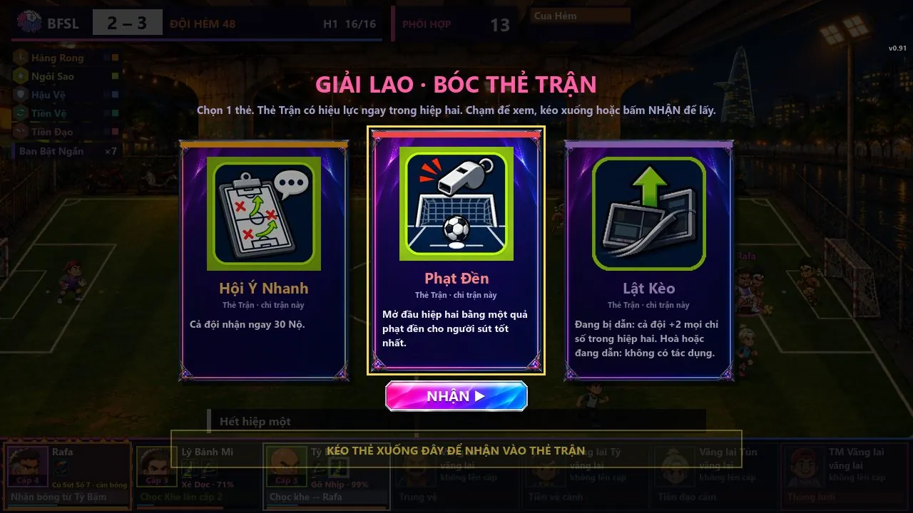
Thắng hay thua, sau trận được chọn 1 trong 3 người về đội, thay cho một cầu thủ vãng lai. Thắng thì bóc thêm một gói thẻ chiến thuật. Hai kỹ năng đúng cặp đủ cấp thì dung hợp thành chiêu mới.
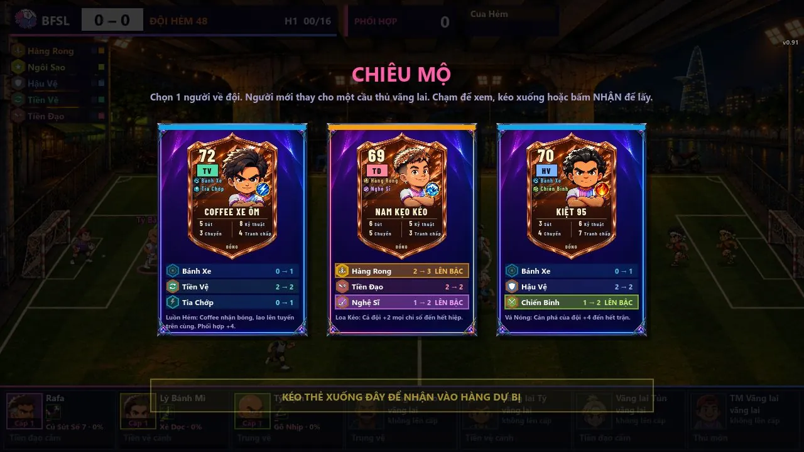
Giữa các trận là ngày nghỉ ở phòng gym Bloodflame: đẩy tạ, sút bia ở sân phủi, cụng ly ở quán nhậu chị Tư hay học cao nhân ghé chơi, mỗi việc chiếm một buổi. Quỹ đội để mở cây chiến thuật bốn nhánh.
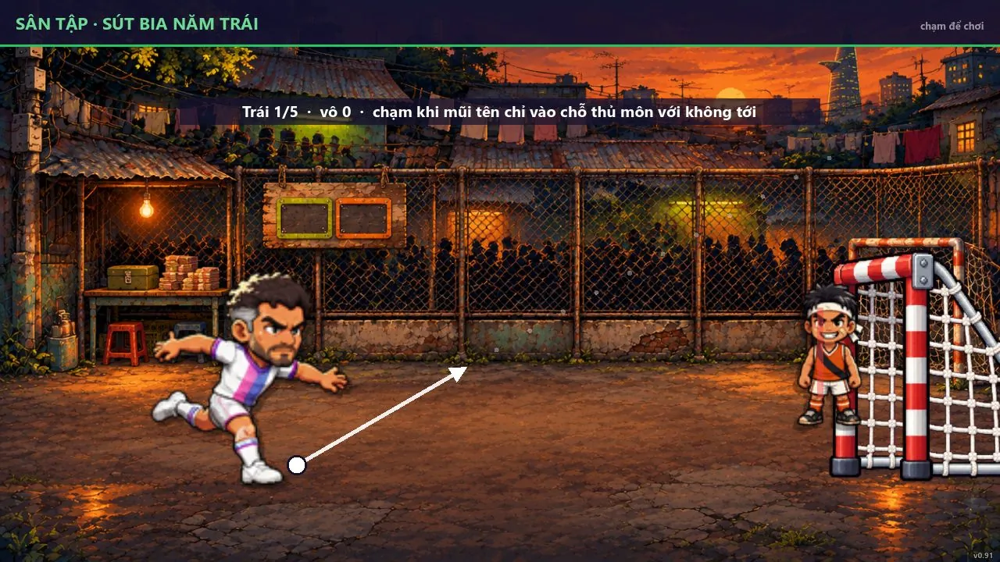
Mỗi giải đá vòng tròn với sáu đội. Lọt nhóm đầu bảng mới được gặp trùm, hạ trùm mới qua giải. Trượt thì đá lại cả giải với đội hình đang có.
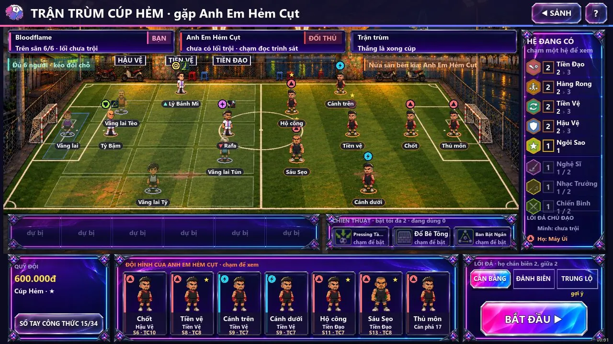
Sân xi măng kẹp giữa nhà dân, hẻm nhỏ Quận 4. Trùm Sáu Sẹo và Anh Em Hẻm Cụt: đá rát, áp sát từ đầu.
Gầm cầu Ông Lãnh, quá nửa đêm. Trùm Út Ma lướt như ma, phản công trong hai nhịp.
Bến cảng Khánh Hội, sân bê tông dưới đèn pha. Trùm Tám Tàu: ba mươi năm bốc hàng, thủ như thành tàu.
Sân trong hội quán Chợ Lớn. Trùm Tư Rồng và Long Môn Võ Quán đổi thế võ mỗi hiệp.
Chưa mở
Mỗi cầu thủ mang một hệ nghề và một tuyệt kỹ luyện từ chính nghề của mình: Xẻ Dọc của anh bán bánh mì, Luồn Hẻm của chú xe ôm, Cạo Sát của thằng hớt tóc. Phần lớn là người thật, được vẽ từ ảnh của chính họ.


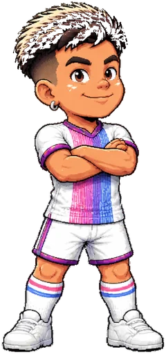

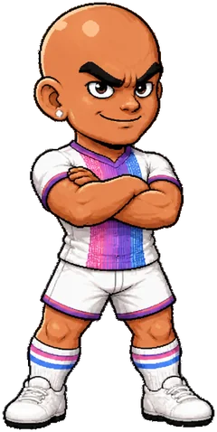

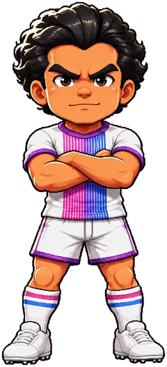

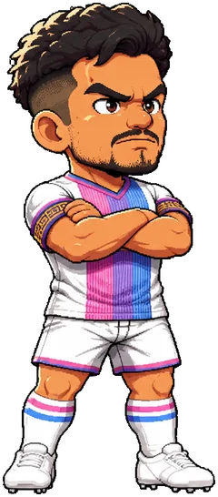
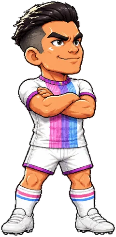
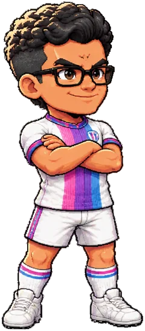
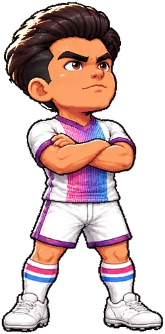
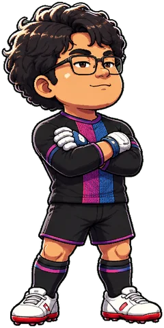

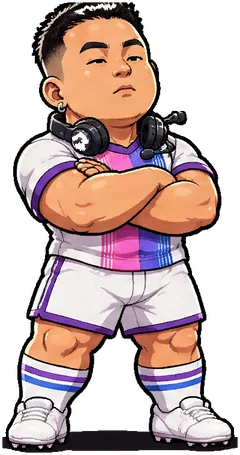
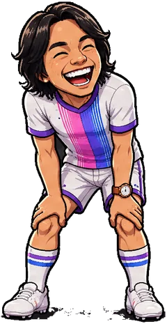


Cùng 16 gương mặt hư cấu đang chờ người thật thay vào. Bạn muốn là một trong số đó? Góp mặt vào game →
Game bóng phủi Sài Gòn của Bloodflame Studio. Chơi miễn phí trên trình duyệt, điện thoại hay máy tính đều được. Game đang trong quá trình phát triển nên luật và số liệu có thể đổi sau mỗi bản.